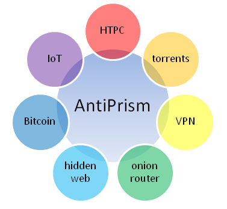
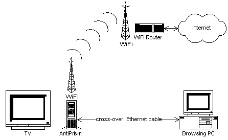

AntiPrism
Copyright © 2014-2017 by AntiPrism.ca

AntiPrismCopyright © 2014-2017 by AntiPrism.ca |
|

AntiPrism is a toolbox platform for securing the online presence, web browsing and communications. It is implemented as a set of extensions to the OpenELEC-derived media center software providing a universal and seamlessly integrated web privacy solution for home and small office. It runs from a read-only file system within a secure Linux operating environment bootable from a USB flash drive, SD memory card, or installable on a HDD/SSD. AntiPrism is activated with a password used as an encryption key to a hidden file system. Once deactivated, it leaves no traces of its operations. The computer device running AntiPrism can serve as a media center for watching movies, streaming music and games, and general web surfing with the included basic web browser, because the basic XBMC/Kodi external plug-ins functionalities are preserved and acting as an anonymizing tool in the background.
The main differences between AntiPrism and other existing anonymizing Linux derivatives (Tails, Whonix, Liberte, etc) are dictated by its purpose. AntiPrism provides, basically, a “secure anonymizing media center”, a household device that would normally do little when not being used for entertainment, but is now loaded with new hidden powers. For example, you can anonymously search, download and watch your torrents right on the device, without a need to copy them elsewhere. Same time, it is capable to run a “hidden” customizable secure website with web cameras, home automation portal or your own online store. It can also run as an intermediate or entry node in the anonymizing networks extending their strength and improving availability. It has a noticeably high performance, due to the fast Systemd Linux backend with close to real-time IRQ response and low network packets losses.
Current AntiPrism version supports i386, x86_64 and ARM-compatible processors running on a wide range of Intel-compatible PCs and Raspberry Pi.
This manual covers the main functionality of AntiPrism - an encrypted file system (container), exchanging and verifying keys and authenticating documents with digital signatures, email-like module allowing users to send and receive emails while preserving privacy, anonymous web-surfing, web-hosting, file sharing and onion routing.
As a matter of fact, the majority of web surfing, email, chat, VoIP or video traffic of the modern Internet is subject of global surveillance. The NSA’s PRISM (USA), Great Firewall (China), SORM-2 (Russia) the Five Eyes Countries and other similar initiatives monitor many connections. While it may not appear disturbing, it is potentially dangerous, since any joke or search you may have carelessly made online can raise a “red flag” putting anyone on the government's list of suspicions persons. The results of it might be really unwanted, including restrictions in travel destinations, arrests or even imprisonment. Intranet surveillance is another issue, potentially affecting businesses and even private households.
Regional content restrictions – as an example, about a half of music videos on YouTube are blocked in Germany because of local copyright issues. By specifying ExitNodes outside of Germany through the AntiPrism's Settings, German AntiPrism users can access most all YouTube videos. Same applies to Netflix and other online services that limit the content availability based on the client's geographical location.
The built-in onion router functionality can anonymize your entire network transparently, allowing to bypass regional content restrictions for devices like Chromecast, AppleTV or similar. Consider this, as a "free VPN" service in the country of your choice!
Hidden personal websites – you can run them in AntiPrism, and nobody can trace their physical locations based on their public addresses.
AntiPrism is free, open-source software – you can ensure there is nothing hidden by analyzing the source code and building the software by yourself.
It is easy to configure, enabling it to fully operate even in very restrictive environments.
While other existing tools may provide similar kind of functionality, they usually require a dedicated PC or handheld device to operate and do not provide a familiar and easy to use user interface. AntiPrism shares the PC, HTPC or RPi with the media center software. Any AntiPrism services can be accessed through your home theatre via a secure VPN connection.
I2P-Bote, the I2P’s messaging system requires exchanging identities before the secure communications can start. There is no convenient and secure mechanism offered for this purpose by I2P. AntiPrism provides such a mechanism through the web-of-trust and “dead drops” technologies.
AntiPrism is more secure than Tor Browser or I2P running in Windows or any other closed-source OS, as one can guarantee your private keys won't become available to any unwanted organization due to malicious OS or third party software components.
Enabling your PC appliance as a node to the global anonymizing networks improves their security, performance and availability; hence, you receive good karma.
AntiPrism can be easily installed as an update to your existing 32/64-bit Intel or RPi OpenELEC appliance.

AntiPrism is implemented as a set of built-in media center plugins. It provides anonymous web surfing, web hosting and networking with popular traffic anonymizing tools Tor, I2P and Privoxy. It implements a web of trust communications security model by using GnuPG for keys and contacts exchange.
Encrypted file container keeps your sensitive data as well as private keys, secure identities and so on. Private keys and identities wouldn’t leak outside your device even if it is stolen, or your computer is infected by viruses/trojans. For encryption, both Cryptsetup (Linux-native disk encryption system, default) and TrueCrypt 7.1a (optional) are fully supported. For access control, pre-configured AppArmor rules are guarding the protected files.
Tor is free software for enabling online anonymity and resisting censorship. It was designed to make it possible for users to surf and host on the Internet anonymously, so their activities and location cannot be discovered by government agencies, corporations, or anyone else. Tor directs Internet traffic through a free, worldwide, volunteer network consisting of thousands of relays to conceal a user's location and usage from anyone conducting network surveillance or traffic analysis. Using Tor makes it more difficult for Internet activity to be traced back to the user: this includes visits to Web sites, online posts, instant messages, and other communication forms.
I2P (the Invisible Internet Project) is a computer network layer that allows applications to send messages to each other pseudonymously and securely. Uses include anonymous web surfing, web hosting, chatting, blogging, file transfers, etc. The software is free and open source and is published under multiple licenses.
The built-in AntiPrism web browsing, web hosting, messaging and file sharing services are protected with Tor and I2P. Private keys used by Tor, I2P, SSH, OpenVPN, etc services of AntiPrism are stored within the encrypted file system and are protected with AppArmor kernel security module.
External browsers may use AntiPrism as a secure anonymizing proxy or an onion router. The connection between the browser and AntiPrism can be optionally encrypted with a point-to-point VPN tunnel, eliminating the risks of intranet-based surveillance.
AntiPrism can be
freely downloaded from its GitHub
release repository.
For binary releases, download the
32/64-bit Intel PC or ARM RPi release TAR package. For sources,
download the source package or use the git tool to clone the tree or
pull the changes as per the instructions there.
Verify the
downloaded packages using the instructions posted at the download
page. Verification is very important to insure that the software you
downloaded is original and not modified by any malicious third party.
Use the AntiPrism public
key for verfication. Once verified, unpack the archive and
proceed with either creating the install key or building
the software from sources.
You can follow the instructions in OpenELEC WiKi about how to install the image to a USB key or a mini/micro SD card with some minor adjustments:
Currently, only Windows and Linux USB key installers are supported.
When installing the USB key under Windows, use create_installstick.exe and follow the wizard's prompts.
To install to an SD memory card for RPi, use the create_sdcard Linux tool included with the package.
Connect an AntiPrism USB flash drive to your computer.
Boot your computer from USB drive.
If you are evaluating AntiPrism with live boot, choose “Live Storage” / otherwise ”Storage” or ”Install” (by choosing “Live Storage” you will create container on the USB-drive, otherwise the container will be created on your HDD/SSD and all your data will be destroyed; choosing Install makes the system bootable from HDD/SSD eliminating the need in key).
Set the name for your new machine and click “Done” button.
Choose a network you want to connect to.
You will be presented with the AntiPrism Welcome screen.
Creating the container is an important step that couldn’t be skipped.
Before starting to create your container you can (optionally) choose the type of container, its file name, file system type, whether or not TrueCrypt should be used (see Settings). It is OK to use the default settings unless you have some special requirements.
To begin, click the “OK” button. Choose the container size in per cents of available disk space. The bigger size, the longer time it will take.
Create a password (20 characters minimum). This password will protect all your data. Choose a strong password and keep it in a safe place.
AntiPrism will create the container and initialize it. It may take some time depending on the size and performance of your PC.
Once your container is ready, you will be presented with a choice to restore your backup if you have it.
If you have SSH enabled in the Settings, you will be asked to create the SSH password. Use a password different from your AntiPrism's.
Once the container is created or its correct password entered, the Main Menu is displayed.
Anonymous Web: starts the built-in web-browser.
Anonymous Torrents: allows you to manage your secure torrents.
Trusted Keys: allows you to manage your GPG/PGP keys.
Trusted Contacts: exports/imports your address book contacts.
You can execute shell commands, if you need to, by clicking Cmd. You can switch back and forth between XBMC and the shell prompt or web browser by pressing Alt+Tab. The shell commands and web browsing histories are turned off, and the browsing settings and bookmarks are kept within the encrypted container.
You can exit AntiPrism leaving it running in the background by clicking OK, or de-activate it by clicking Cancel.
This brings up the built-in Links web browser, anonymized with Privoxy, Tor and I2P (depending on what services are enabled). The default starting page displays a set of popular links. For information on the browser's hot keys and features, please read this. The RPi version is using WebViewer addon.
This opens the I2PSnark XBMC frontend plugin. One can manage and access torrents from here. There is also a standard web-based I2PSnark interface available in I2P, but one may find it convenient doing it via XBMC.
This opens the GnuPG XBMC frontend plugin. When opening it from AntiPrism, it accesses the keys stored in the encrypted container. GnuPG is the core component used for building web-of-trust. Before exchanging encrypted contacts and other data, parties need to exchange and verify their public keys. For that, each of them needs to create its own key first. Public keys can be exported and exchanged then by regular email, USB keys or through a key server. After receiving, each key's fingerprint must be verified over a reliable communication channel (key signing party, direct conversation, phone call). Do not verify fingerprints by regular email, as this can be compromised.
Once verified, keys become trusted and can be used to exchange and verify the encrypted data.
All key server communications are anonymized with AntiPrism.
This opens the I2P-Bote Address Book XBMC frontend plugin. From here, one can securely exchange contacts and the identity info. Contacts can be exported for a number of recipients, whose public keys are available in GnuPG. When exporting, the information is signed and encrypted, so it can be decrypted and verified (using your public key) at the receiving sides. The exported contacts can be sent as files using any regular email or file transfer services (this is safe, as only the key holders can decrypt them), or via the “dead drop” public services. Such services receive GnuPG-encrypted contacts and keep them for some days associated with a certain unique “drop ID”. This drop ID can be used to retrieve the content by the recipients. This technique is quite convenient and efficient, as the drop IDs can be communicated via any common media (phone, email, chat, etc). The AntiPrism's default dead drop's URL is built into the software. All dead drop communications are anonymized with AntiPrism. Once contacts are exchanged, I2P-Bote messaging can start between the parties totally securely.
You can access the Settings by clicking the “Config” button on AntiPrism screen.
Autostart: AntiPrism will start with the system boot. When off, you can start AntiPrism manually from the Programs menu.
Profile container: path to the container file. You can create multiple containers; each may hold separated sets of email contacts and identities.
Mount point: a directory in which our container will be mounted.
Password-protected screensaver: you can choose if your screen will be locked after the certain period of time (you will need to use your container password to unlock it).
File system type: default is ext4. You can choose another type of file system if you want to mount your container on another computer where ext4 is not supported. Other choices are ext2, ext3, NTFS. Should be set before the creation of container and kept.
Check file system during activation: AntiPrism will check the container file system before it starts. When errors found, AntiPrism will attempt to repair them.
Backup file system during activation: AntiPrism will create a backup of your container before it starts. When enabled, backup path must be specified (should be writeable and contain enough free space).
Use TrueCrypt – choose this option if you really want to use TrueCrypt (for advanced users). Should be set before the creation of container and kept.
Run X terminal for command prompt (requires keyboard): enabling this, you get a full shell terminal when clicking the Cmd button. Obviously, one needs a keyboard for this, that's why the default (off) setting allows only executing single shell commands.
Debug log: enable writing of extra debugging information into the log files.
Here, you can configure your anonymizing services: I2P, Tor, Privoxy; enable Kodi web frontend, SSH and VPN access.
Keep anonymizers data in RAM (new identity with every startup): when on, does not keep the Tor and I2P files inside the container but in the RAM-disk. Therefore, the networks have to be bootstrapped completely with new identities created during every startup, which increases the initialization time. After the initialization, the performance will increase because no recording of the network data into the flash memory is performed. When on, hidden website support is disabled. Default is off.
Enable I2P: this will enable I2P service and access to its ports via the firewall. Default is on.
Bootstrap I2P via Tor (requires Privoxy): this allows launching I2P in restricted environments that block the bootstrapping servers of I2P. China is a good example. By bootstrapping I2P via Tor, such a blocking can be bypassed. Default is off.
Enable hidden website: when enabled, activates the built-in hidden web services – Hiawatha or Jetty (part of I2P) or both. The hidden web sites become accessible under randomly-generated .onion and .i2p host names in the Tor and I2P networks respectively. The .onion host names can be retrieved from the system via SSH, while the .i2p host name can be retrieved via the I2P web frontend. Default is off.
Enable Tor: this will enable Tor service and access to its ports via the firewall. Default is on.
SOCKS port: TCP port number to use for SOCKS connections. Default is 1080.
Use bridges: in case, if your environment is blocking Tor bootstrapping, use Tor obfuscating bridges to bypass that. When enabled, enter a number of bridges in the Bridges string. The bridges can be obtained at https://bridges.torproject.org/options or by sending a request to bridges@torproject.org and entered in the same format, separated by comma. Fingerprints supplied after every address:port are optional but recommended. Default is off.
Run as a Tor relay node: enabling this puts your appliance into the Tor network as an intermediate/entry node. Exit node is always disabled. Default is off.
Run as a bridge relay: enabling this hides your relay node from the list nodes and makes it available only through the bridges requests. Default is off.
Advertized port: TCP port number of your node registered with the Tor network. Useful when running behind a NAT gateway with port forwarding when a different port number is required to be visible from the outside network. Default is 9050.
Listen port: actual TCP port for listening at. Default is 9050.
Enable fteproxy: run as an obfuscating bridge node. Default is off.
Enable obfs3/obfs4, obfs3/obfs4 port: specifies, whether obfs3 or obfs4 (preferable) should be enabled and their listening ports (assigned randomly, but can be changed). Providing an obfs3 or obfs4 bridge is extremely helpful to enable Tor/I2P networking for users from China, Iran and other countries that implement traffic blocking and analyzing technologies.
Entry/Exit/Exclude/Exclude exit nodes: specifies sets of Tor nodes to allow/deny. Countries can be specified as country codes in curly braces separated by comma, like {de},{ca},{nl}
Enable onion router transparent proxy: enables support for transparent proxy connections in addition to regular proxy connections. With traditional proxy methods like SOCKS, setting up the proxy server itself isn't enough; proxy-supporting applications must be chosen, and each application on each machine using the proxy must be specially configured by the user or network administrator to connect through the proxy. Sometimes this isn't possible because an application doesn't support SOCKS, or the administrator doesn't want users to know their traffic is being sent through a proxy. These problems can be avoided by using the operating system's packet filtering facility to redirect outbound connections into a transparent proxy, so named because its presence is intended to be invisible to clients. Default is on.
Enable Privoxy (requires Tor): run filtering proxy that adds even more privacy and removes lots of annoying stuff. Privoxy is configured to forward all external network requests excluding the .i2p domains via Tor. I2P requests are forwarded to I2P, and intranet/localhost requests are handled directly. Caching is disabled. Default is on.
Enable Web Access: enables the default web frontend of Kodi. Default is off.
Enable SSH: enables SSH service. Default is on.
Enable OpenVPN server: enables peer-to-peer OpenVPN server mode. Communications are set up with a shared key that can be retrieved remotely with SSH from the directory .openvpn of your container. Default is off.
Allow access from any IP: you can restrict access to AntiPrism computer from other devices by IP-address. When off, you need to specify a trusted IP address from where the access is allowed. Default is off.
One needs to re-activate AntiPrism after the Access Control settings were modified.
Generally, AntiPrism can be used as a stand-alone unit, with a single securely-conected client or with multiple clients connected over an unsecure network.
Stand-Alone AntiPrism System
With this setup, you do not open the AntiPrism HTPC for any external client connections. Disallow access from any external IP via the Access Control configuration. The AntiPrism services will only be reached via the XBMC user interface. Your torrents can be accessed via the file manager of XBMC under /storage/.Profile/i2p/i2psnark (default settings).
Single Cross-Over Cable Client

With
this setup, AntiPrism acts as an anonymizing proxy or gateway for a
single computer connected to it via a cross-over Ethernet cable.
AntiPrism is using WiFi to connect to the router. This configuration
does not need any additional VPN security as the link between
AntiPrism and its client is secure.
If Onion Router and Ethernet tethering are enabled, no additional configuration of the browsing PC is required. It will be automatically assigned with TCP/IP settings, and its networking traffic will be transparently routed via Tor.
Otherwise, the TCP/IP settings of the Ethernet link are set automatically with ZeroConf. You should set the external web browser's proxy settings with the IP address of the Ethernet interface of AntiPrism (you can find it under the Connections settings). Protocol and port settings for the proxy depend on what AntiPrism services are enabled. Use HTTP/HTTPS proxy with port 8118 by default.
I2P services can be accessed from the external web browser via the IP address of AntiPrism, port 7657. Trusted IP should be set in the Access Control configuration to the IP address of the connected computer.
With this setup, AntiPrism acts as a anonymizing gateway that routes all outgoing connections from the LAN and local host clients transparently via the Tor network. This feature is extremely handy when used with software or external devices that do not support or ignore proxy configuration. Make sure wireless or Ethernet tethering is enabled in the OpenELEC Network Settings for this feature to work with the external devices.
WARNING: Tethered Ethernet interface should never be connected to corporate networks as it will disrupt the normal operation of these networks!
Since there is no additional VPN data encryption applied to the LAN segment of the network path, this setup should only be used with trusted local networks. For non-trusted networks with possible spying / sniffing of the traffic, use the Multiple VPN Clients setup.
With this setup, AntiPrism acts as an anonymizing proxy for a group of computers in a non-trusted network. Since nobody can guarantee absence of spying Ethernet network components, setting up VPN access is strongly recommended. AntiPrism supports OpenVPN protocol with a shared static key. The key can be retrieved from the /storage/.Profile/.openvpn encrypted container's directory of the active AntiPrism system via SSH access. Disabling, reactivating, enabling and again reactivating OpenVPN or SSH services re-creates their keys.
AntiPrism supports both Tor`s .onion and I2P`s .i2p hidden websites hosting. As about the web server, both built into I2P Jetty and stand-alone Hiawatha daemons are available. Web application support include CGIs in Python, Linux shell scripts or Java. This is a great way of adding to your AntiPrism a webcam, an online store, a home automation portal or anything else, that will run anonymously, e.g. its physical location is extremely hard to trace.
Web applications can be installed from ZIP archives with the following internal structure:
/ cgi-bin - put all the CGI programs in this subdirectory
/ data - all the data files or databases used with CGIs should be in this subdirectory
/ docroot - the static document root subdirectory with index.html
README.txt - details of the web application
The archive should be unzipped using SSH into the web server`s root directory within the encrypted container. For Jetty, it is i2p/eepsite/ ; for Hiawatha, it is .hiawatha/ . Some examples of web apps are available at the AntiPrism website.
Names of your .onion or .i2p site can be retrieved from Tor or I2P after the hidden website is enabled. Tor saves the .onion site name within the hostname file created in the web server`s root directory. I2P allows to retrieve the hidden web service name from its web front-end.
AntiPrism is distributed under a mixed-license model.
The OpenELEC-based platform is distributed under the GNU GPLv2 license.
The AntiPrism-related addons (AntiPrism, I2P and GnuPG addons) are distributed under a BSD-style license:
Copyright (c) 2014-2017, AntiPrism.ca
All rights reserved.
Redistribution and use in source and binary forms, with or without modification, are permitted provided that the following conditions are met:
1. Redistributions of source code must retain the above copyright notice, this list of conditions and the following disclaimer.
2. Redistributions in binary form must reproduce the above copyright notice, this list of conditions and the following disclaimer in the documentation and/or other materials provided with the distribution.
3. Neither the name of the copyright holder nor the names of its contributors may be used to endorse or promote products derived from this software without specific prior written permission.
THIS SOFTWARE IS PROVIDED BY THE COPYRIGHT HOLDERS AND CONTRIBUTORS "AS IS" AND ANY EXPRESS OR IMPLIED WARRANTIES,
INCLUDING, BUT NOT LIMITED TO, THE IMPLIED WARRANTIES OF MERCHANTABILITY AND FITNESS FOR A PARTICULAR PURPOSE ARE DISCLAIMED. IN NO EVENT SHALL THE COPYRIGHT HOLDER OR CONTRIBUTORS BE LIABLE FOR ANY DIRECT, INDIRECT, INCIDENTAL, SPECIAL, EXEMPLARY, OR CONSEQUENTIAL DAMAGES (INCLUDING, BUT NOT LIMITED TO, PROCUREMENT OF SUBSTITUTE GOODS OR SERVICES; LOSS OF USE, DATA, OR PROFITS; OR BUSINESS INTERRUPTION) HOWEVER CAUSED AND ON ANY THEORY OF LIABILITY, WHETHER IN CONTRACT, STRICT LIABILITY, OR TORT (INCLUDING NEGLIGENCE OR OTHERWISE) ARISING IN ANY WAY OUT OF THE USE OF THIS SOFTWARE, EVEN IF ADVISED OF THE POSSIBILITY OF SUCH DAMAGE.